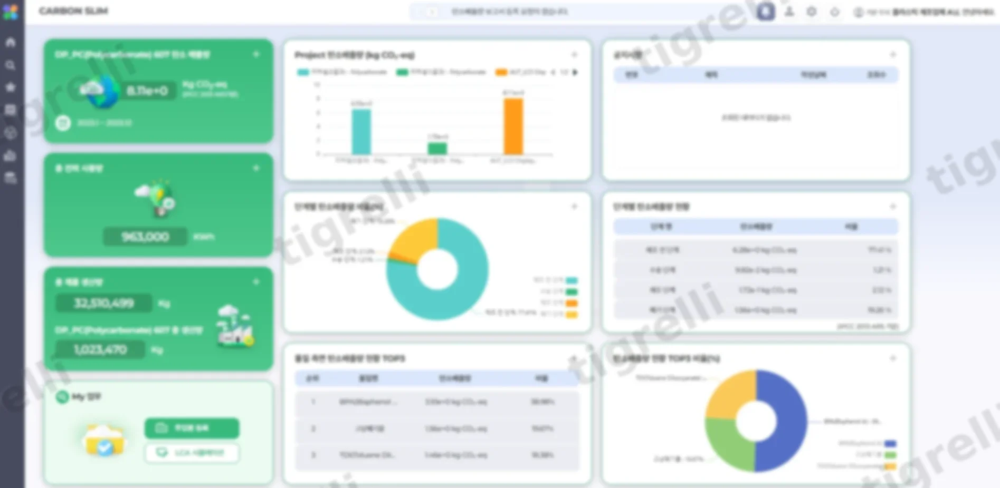
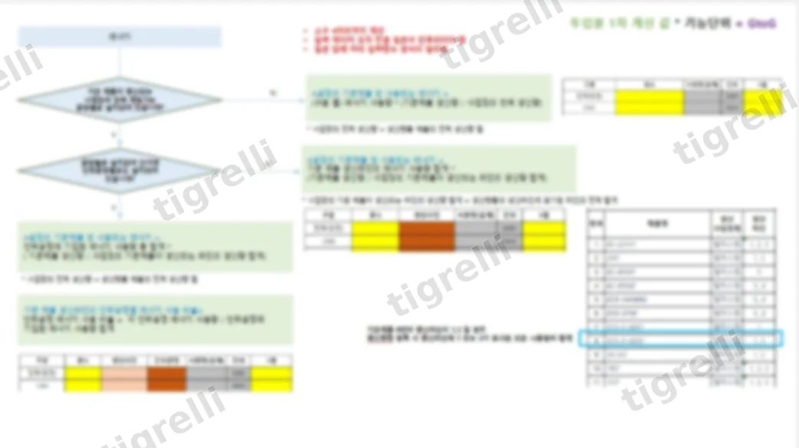
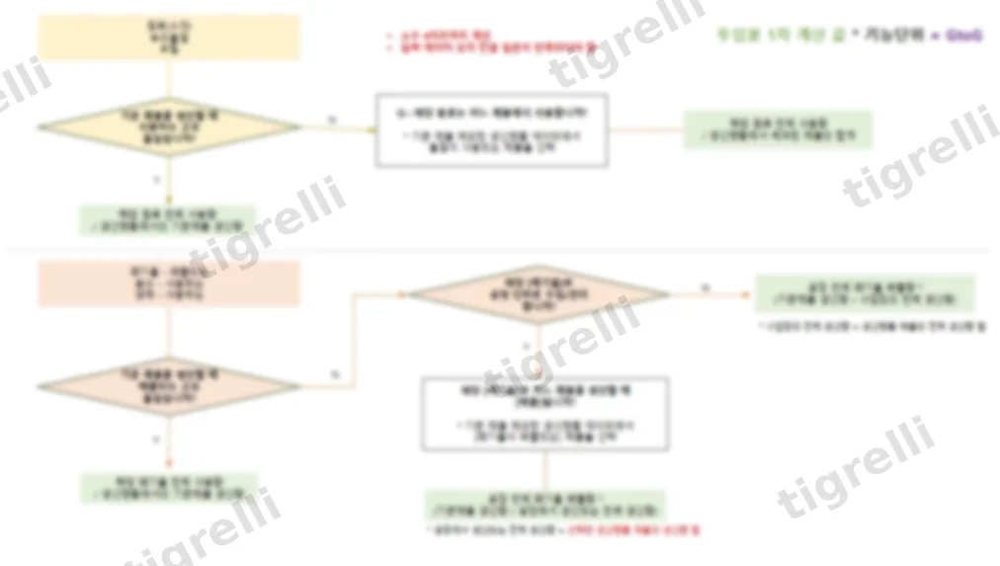
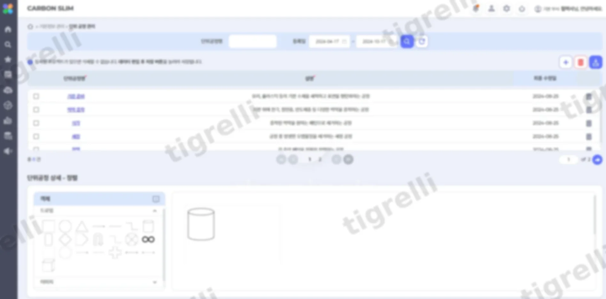
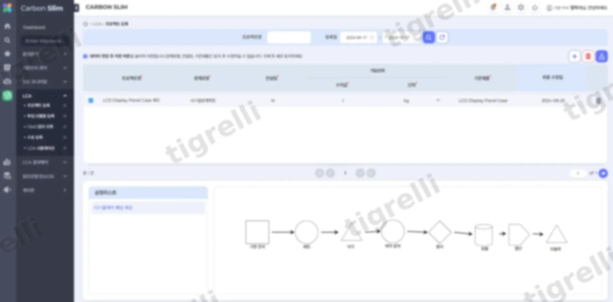
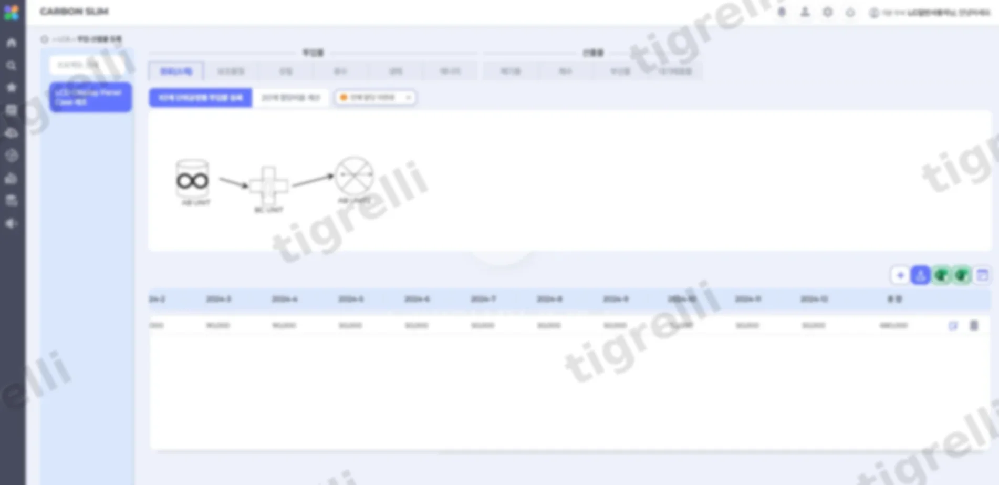
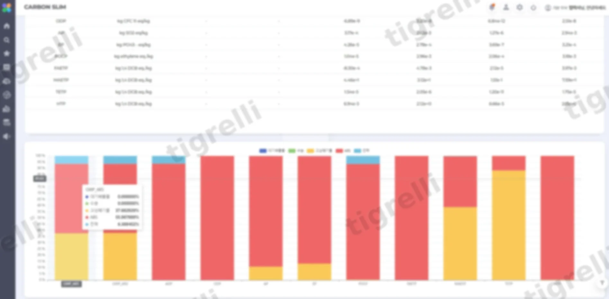
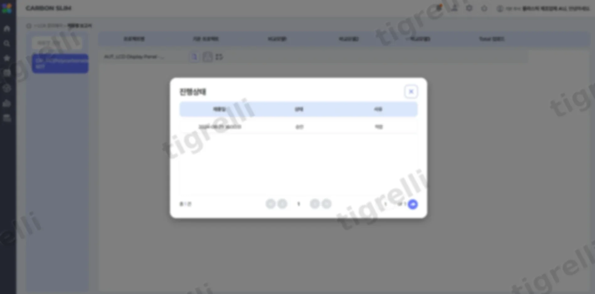

0→1 PM
Carbon Slim
LCA 기반 탄소관리 솔루션의 신규 기획과 상용화

프로젝트 개요
Carbon Slim은 제품의 원료부터 제조 공정까지 발생하는 환경영향을 산정하고 분석하는 LCA(전과정평가) 기반 탄소관리 솔루션입니다.
기업별로 서로 다른 생산 공정과 데이터 관리 방식을 시스템에 반영하면서도, 공통적으로 사용할 수 있는 산정 프로세스를 제공하는 것이 핵심 과제였습니다.
PM으로서 현업 컨설턴트와 협업해 도메인 요구사항을 정의하고, 기능·화면·데이터 흐름 설계부터 개발 일정 관리, 출시 및 고도화까지 담당했습니다.
핵심 과제 01
전문적인 산정 프로세스를 제품 기능으로 구조화
LCA는 원료, 에너지, 공정, 배분 기준 등 다양한 데이터를 활용하며, 사용자의 전문성에 따라 입력 가능한 정보의 범위가 다릅니다.
-
역할 기반 입력 흐름
전문적인 판단이 필요한 항목과 일반 사용자가 입력할 수 있는 항목을 구분해 입력 흐름을 설계했습니다.
-
분석 범위·세부 수준 선택
기업별 분석 목적과 생산 환경이 다르다는 점을 고려해 분석 범위와 세부 수준을 선택할 수 있도록 했습니다.
-
배분(Allocation) 계산 로직
여러 제품이 설비나 공정을 공유하는 경우에는 에너지와 원료 사용량을 합리적으로 배분할 수 있도록 계산 로직을 정리했습니다.
관련 화면





핵심 과제 02
시장 피드백에 따른 제품 구조 변경
초기 기획
초기 제품은 부품 수 50개 미만의 소규모 기업을 주요 고객으로 설정했습니다.
입력 편의성을 높이기 위해 기초 데이터와 공정 정보를 하나의 화면에서 관리할 수 있도록 기획했습니다.
드러난 문제
그러나 제품 시연 과정에서 예상보다 규모가 큰 기업들이 관심을 보였고, 이들 기업의 복잡한 공정과 많은 부품 데이터를 처리하기에는 초기 구조가 적합하지 않다는 문제가 드러났습니다.
대응
이에 실제 고객 요구사항을 반영하기 위해 화면 구조뿐 아니라 데이터베이스 구조까지 재검토했습니다.
대규모 데이터와 복잡한 공정 구성을 수용할 수 있도록 DB를 재설계하고 기존 데이터를 마이그레이션하는 고도화 작업을 진행했습니다.
관련 화면
핵심 과제 03
정확성이 중요한 계산 로직의 검증
탄소배출량 산정 결과는 기업의 환경정보와 연결되므로 계산 결과의 신뢰성이 중요합니다.
현업 컨설턴트와 함께 산정 규칙을 시스템 로직으로 구체화하고, 개발 과정에서 계산 결과의 정확성을 검증하는 작업을 수행했습니다.
이 과정에서 도메인 전문가의 업무 지식을 기능 요구사항과 데이터 처리 규칙으로 변환하는 경험을 쌓았습니다.
관련 화면


결과
- 신규 LCA 솔루션의 기획부터 상용화까지 수행
- 시장 피드백에 따라 UI 및 데이터 구조 고도화
- 개선된 제품을 기반으로 기업 고객 2곳과 계약 체결
- 후속 국가사업으로 프로젝트 확장
회고
이 프로젝트에서 가장 중요한 경험은 최초의 기획이 항상 실제 시장의 요구와 일치하지는 않는다는 사실이었습니다.
초기 가정을 유지하는 것보다 실제 고객의 요구를 확인하고 제품 구조를 수정하는 것이 중요했습니다.
또한 화면의 문제로 보이는 현상이 데이터 구조의 한계에서 비롯될 수 있다는 점을 경험했습니다.
PM으로서 기능 구현 여부뿐 아니라 제품의 확장성과 데이터 구조까지 함께 고려해야 한다는 것을 배웠습니다.